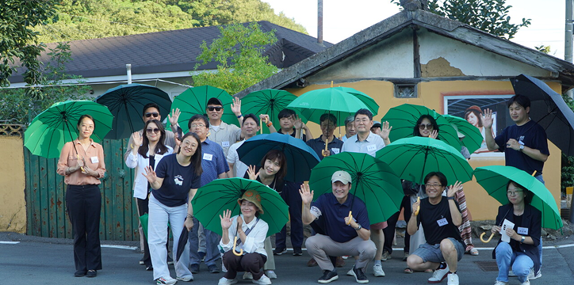
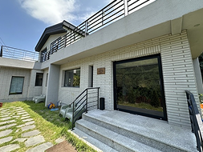
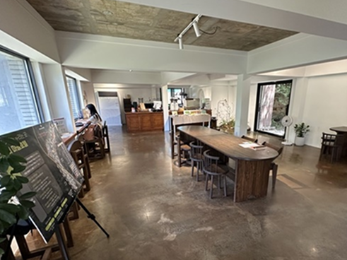
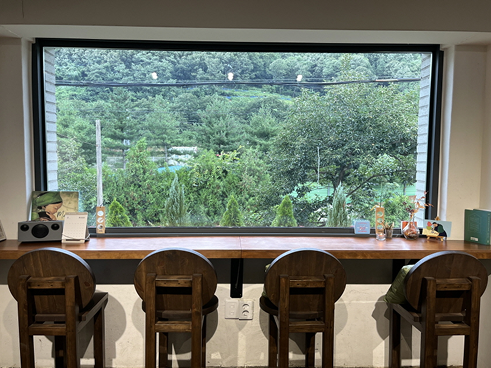

돌봄·교육
아이들이 마을 안에서 안전하게 배우고 자라도록 교육돌봄 프로그램을 운영합니다.
2014년, 일곱 가정이 모여 시작했습니다. 아이를 돌보고, 빈 공간을
되살리며, 마을이 스스로 살아나는 길을 만들어 갑니다.
2014년 일곱 가정이 화양읍 다로리에 함께 귀촌했습니다. 지역의 문제를 직접 풀어 보자는 마음으로 돌봄서비스, 공간 재생, 커뮤니티 비즈니스를 시작했습니다.
(주)다로리인은 마을과 함께 성장하며, 마을에서의 경험을 청도 지역 전체의 변화로 이어 가려 합니다.

아이들이 마을 안에서 안전하게 배우고 자라도록 교육돌봄 프로그램을 운영합니다.
비어 있던 삼신보건진료소를 카페와 소통 공간으로 되살려 주민이 모이는 거점으로 만들었습니다.
마을 안에서 일자리와 수익이 만들어지는 지속 가능한 모델을 실험합니다.
삼신보건진료소였던 공간이 카페와 교육돌봄 프로그램을 품은 마을의 사랑방이 되었습니다.



영업시간: 09:00 ~ 18:00 위치: 경상북도 청도군 화양읍 다로길 58
협업, 방문, 프로그램 문의는 편하게 연락 주세요.